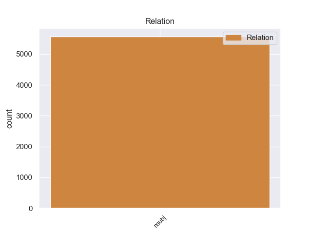
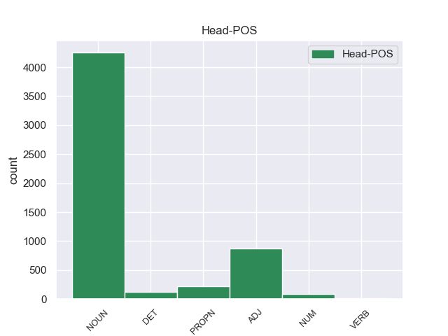
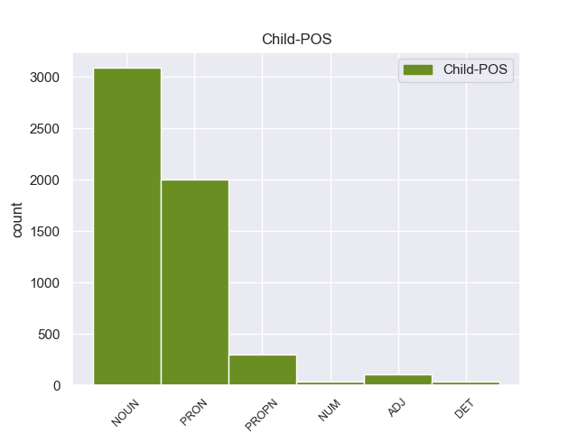

Distribution of features within this leaf



Agreement Rules sorted by frequency.
- When the dependent token is the nominal subject(nsubj) of the head token, and the head token is NOUN and the dependent token is PRON.
1 Да _ _ _ _ 0 _ _ _
2 , _ _ _ _ 0 _ _ _
3 это это PRON _ Animacy=Inan|Case=Nom|Gender=Neut|Number=Sing 5 nsubj 5:nsubj _
4 была _ _ _ _ 0 _ _ _
5 работка работка NOUN _ Animacy=Inan|Case=Nom|Gender=Fem|Number=Sing 0 _ _ _
6 ! _ _ _ _ 0 _ _ _
1 Ничто _ _ _ _ 0 _ _ _
2 не _ _ _ _ 0 _ _ _
3 проходит _ _ _ _ 0 _ _ _
4 бесследно _ _ _ _ 0 _ _ _
5 , _ _ _ _ 0 _ _ _
6 не _ _ _ _ 0 _ _ _
7 зарастает _ _ _ _ 0 _ _ _
8 травой _ _ _ _ 0 _ _ _
9 забвения _ _ _ _ 0 _ _ _
10 , _ _ _ _ 0 _ _ _
11 и _ _ _ _ 0 _ _ _
12 человеческая _ _ _ _ 0 _ _ _
13 душа душа NOUN _ Animacy=Inan|Case=Nom|Gender=Fem|Number=Sing 15 nsubj 15:nsubj _
14 не _ _ _ _ 0 _ _ _
15 кладбище кладбище NOUN _ Animacy=Inan|Case=Nom|Gender=Neut|Number=Sing 0 _ _ _
16 , _ _ _ _ 0 _ _ _
17 а _ _ _ _ 0 _ _ _
18 святилище _ _ _ _ 0 _ _ _
19 , _ _ _ _ 0 _ _ _
20 дарующее _ _ _ _ 0 _ _ _
21 вечную _ _ _ _ 0 _ _ _
22 жизнь _ _ _ _ 0 _ _ _
23 образам _ _ _ _ 0 _ _ _
24 былого _ _ _ _ 0 _ _ _
25 . _ _ _ _ 0 _ _ _
1 Я _ _ _ _ 0 _ _ _
2 хорошо _ _ _ _ 0 _ _ _
3 знал _ _ _ _ 0 _ _ _
4 окрестность _ _ _ _ 0 _ _ _
5 : _ _ _ _ 0 _ _ _
6 и _ _ _ _ 0 _ _ _
7 со _ _ _ _ 0 _ _ _
8 стороны _ _ _ _ 0 _ _ _
9 Дмитровского _ _ _ _ 0 _ _ _
10 шоссе _ _ _ _ 0 _ _ _
11 , _ _ _ _ 0 _ _ _
12 и _ _ _ _ 0 _ _ _
13 со _ _ _ _ 0 _ _ _
14 стороны _ _ _ _ 0 _ _ _
15 нашей _ _ _ _ 0 _ _ _
16 дачи _ _ _ _ 0 _ _ _
17 , _ _ _ _ 0 _ _ _
18 и _ _ _ _ 0 _ _ _
19 со _ _ _ _ 0 _ _ _
20 стороны _ _ _ _ 0 _ _ _
21 кочкастого _ _ _ _ 0 _ _ _
22 болота _ _ _ _ 0 _ _ _
23 , _ _ _ _ 0 _ _ _
24 тянущегося _ _ _ _ 0 _ _ _
25 за _ _ _ _ 0 _ _ _
26 горизонт _ _ _ _ 0 _ _ _
27 , _ _ _ _ 0 _ _ _
28 лесные _ _ _ _ 0 _ _ _
29 опушки опушка NOUN _ Animacy=Inan|Case=Nom|Gender=Fem|Number=Plur 32 nsubj 32:nsubj _
30 были _ _ _ _ 0 _ _ _
31 сплошь _ _ _ _ 0 _ _ _
32 ольховые ольховый ADJ _ Case=Nom|Degree=Pos|Number=Plur 0 _ _ _
33 . _ _ _ _ 0 _ _ _
1 Но _ _ _ _ 0 _ _ _
2 , _ _ _ _ 0 _ _ _
3 начиная _ _ _ _ 0 _ _ _
4 с _ _ _ _ 0 _ _ _
5 20-х _ _ _ _ 0 _ _ _
6 годов _ _ _ _ 0 _ _ _
7 , _ _ _ _ 0 _ _ _
8 утвердилось _ _ _ _ 0 _ _ _
9 иное _ _ _ _ 0 _ _ _
10 мнение _ _ _ _ 0 _ _ _
11 : _ _ _ _ 0 _ _ _
12 ВЛКСМ ВЛКСМ PROPN _ Animacy=Inan|Case=Nom|Gender=Masc|Number=Sing 16 nsubj 16:nsubj _
13 - _ _ _ _ 0 _ _ _
14 всего _ _ _ _ 0 _ _ _
15 лишь _ _ _ _ 0 _ _ _
16 инструмент инструмент NOUN _ Animacy=Inan|Case=Nom|Gender=Masc|Number=Sing 0 _ _ _
17 в _ _ _ _ 0 _ _ _
18 руках _ _ _ _ 0 _ _ _
19 партии _ _ _ _ 0 _ _ _
20 . _ _ _ _ 0 _ _ _
1 - _ _ _ _ 0 _ _ _
2 Она она PRON _ Case=Nom|Gender=Fem|Number=Sing|Person=3 4 nsubj 4:nsubj _
3 вся _ _ _ _ 0 _ _ _
4 зеленая зеленый ADJ _ Case=Nom|Degree=Pos|Gender=Fem|Number=Sing 0 _ _ _
5 , _ _ _ _ 0 _ _ _
6 до _ _ _ _ 0 _ _ _
7 последнего _ _ _ _ 0 _ _ _
8 перышка _ _ _ _ 0 _ _ _
9 , _ _ _ _ 0 _ _ _
10 и _ _ _ _ 0 _ _ _
11 с _ _ _ _ 0 _ _ _
12 красной _ _ _ _ 0 _ _ _
13 головой _ _ _ _ 0 _ _ _
14 ! _ _ _ _ 0 _ _ _
1 - _ _ _ _ 0 _ _ _
2 На _ _ _ _ 0 _ _ _
3 мой _ _ _ _ 0 _ _ _
4 взгляд _ _ _ _ 0 _ _ _
5 , _ _ _ _ 0 _ _ _
6 причина причина NOUN _ Animacy=Inan|Case=Nom|Gender=Fem|Number=Sing 7 nsubj 7:nsubj _
7 одна один DET _ Case=Nom|Degree=Pos|Gender=Fem|Number=Sing 0 _ _ _
8 : _ _ _ _ 0 _ _ _
9 отрыв _ _ _ _ 0 _ _ _
10 аппарата _ _ _ _ 0 _ _ _
11 управления _ _ _ _ 0 _ _ _
12 от _ _ _ _ 0 _ _ _
13 первичных _ _ _ _ 0 _ _ _
14 организаций _ _ _ _ 0 _ _ _
15 , _ _ _ _ 0 _ _ _
16 огосударствление _ _ _ _ 0 _ _ _
17 ВЛКСМ _ _ _ _ 0 _ _ _
18 , _ _ _ _ 0 _ _ _
19 превращение _ _ _ _ 0 _ _ _
20 его _ _ _ _ 0 _ _ _
21 в _ _ _ _ 0 _ _ _
22 своеобразный _ _ _ _ 0 _ _ _
23 наркомат _ _ _ _ 0 _ _ _
24 по _ _ _ _ 0 _ _ _
25 делам _ _ _ _ 0 _ _ _
26 молодежи _ _ _ _ 0 _ _ _
27 . _ _ _ _ 0 _ _ _
1 Общее общий ADJ _ Case=Nom|Degree=Pos|Gender=Neut|Number=Sing 12 nsubj 12:nsubj SpaceAfter=No
2 , _ _ _ _ 0 _ _ _
3 что _ _ _ _ 0 _ _ _
4 характерно _ _ _ _ 0 _ _ _
5 для _ _ _ _ 0 _ _ _
6 истории _ _ _ _ 0 _ _ _
7 конца _ _ _ _ 0 _ _ _
8 XX _ _ _ _ 0 _ _ _
9 века _ _ _ _ 0 _ _ _
10 , _ _ _ _ 0 _ _ _
11 - _ _ _ _ 0 _ _ _
12 глобализация глобализация NOUN _ Animacy=Inan|Case=Nom|Gender=Fem|Number=Sing 0 _ _ _
13 социальной _ _ _ _ 0 _ _ _
14 , _ _ _ _ 0 _ _ _
15 экономической _ _ _ _ 0 _ _ _
16 и _ _ _ _ 0 _ _ _
17 политической _ _ _ _ 0 _ _ _
18 жизни _ _ _ _ 0 _ _ _
19 народов _ _ _ _ 0 _ _ _
20 , _ _ _ _ 0 _ _ _
21 наряду _ _ _ _ 0 _ _ _
22 с _ _ _ _ 0 _ _ _
23 этим _ _ _ _ 0 _ _ _
24 - _ _ _ _ 0 _ _ _
25 глобализация _ _ _ _ 0 _ _ _
26 опасностей _ _ _ _ 0 _ _ _
27 , _ _ _ _ 0 _ _ _
28 грозящих _ _ _ _ 0 _ _ _
29 человеческому _ _ _ _ 0 _ _ _
30 роду _ _ _ _ 0 _ _ _
31 . _ _ _ _ 0 _ _ _
1 По _ _ _ _ 0 _ _ _
2 сцене _ _ _ _ 0 _ _ _
3 ее _ _ _ _ 0 _ _ _
4 фамилия фамилия NOUN _ Animacy=Inan|Case=Nom|Gender=Fem|Number=Sing 5 nsubj 5:nsubj _
5 Ульская Ульская PROPN _ Animacy=Inan|Case=Nom|Gender=Fem|Number=Sing 0 _ _ _
6 , _ _ _ _ 0 _ _ _
7 по _ _ _ _ 0 _ _ _
8 паспорту _ _ _ _ 0 _ _ _
9 - _ _ _ _ 0 _ _ _
9.1 _ _ _ _ _ 0 _ _ _
10 Заяц _ _ _ _ 0 _ _ _
11 ; _ _ _ _ 0 _ _ _
12 это _ _ _ _ 0 _ _ _
13 ужасно _ _ _ _ 0 _ _ _
14 , _ _ _ _ 0 _ _ _
15 она _ _ _ _ 0 _ _ _
16 до _ _ _ _ 0 _ _ _
17 сих _ _ _ _ 0 _ _ _
18 пор _ _ _ _ 0 _ _ _
19 краснеет _ _ _ _ 0 _ _ _
20 , _ _ _ _ 0 _ _ _
21 когда _ _ _ _ 0 _ _ _
22 почтальон _ _ _ _ 0 _ _ _
23 приносит _ _ _ _ 0 _ _ _
24 ей _ _ _ _ 0 _ _ _
25 пенсию _ _ _ _ 0 _ _ _
26 и _ _ _ _ 0 _ _ _
27 приходится _ _ _ _ 0 _ _ _
28 расписываться _ _ _ _ 0 _ _ _
29 так _ _ _ _ 0 _ _ _
30 неприлично _ _ _ _ 0 _ _ _
31 . _ _ _ _ 0 _ _ _
1 Дети _ _ _ _ 0 _ _ _
2 любят _ _ _ _ 0 _ _ _
3 играть _ _ _ _ 0 _ _ _
4 в _ _ _ _ 0 _ _ _
5 куплю _ _ _ _ 0 _ _ _
6 - _ _ _ _ 0 _ _ _
7 продажу _ _ _ _ 0 _ _ _
8 , _ _ _ _ 0 _ _ _
9 инстинкт инстинкт NOUN _ Animacy=Inan|Case=Nom|Gender=Masc|Number=Sing 16 nsubj 16:nsubj _
10 торговли _ _ _ _ 0 _ _ _
11 , _ _ _ _ 0 _ _ _
12 мены _ _ _ _ 0 _ _ _
13 , _ _ _ _ 0 _ _ _
14 наверное _ _ _ _ 0 _ _ _
15 , _ _ _ _ 0 _ _ _
16 один один NUM _ Case=Nom|Gender=Masc 0 _ _ _
17 из _ _ _ _ 0 _ _ _
18 древнейших _ _ _ _ 0 _ _ _
19 человеческих _ _ _ _ 0 _ _ _
20 инстинктов _ _ _ _ 0 _ _ _
21 . _ _ _ _ 0 _ _ _
1 И _ _ _ _ 0 _ _ _
2 тут _ _ _ _ 0 _ _ _
3 яркий _ _ _ _ 0 _ _ _
4 сноп _ _ _ _ 0 _ _ _
5 выхватил _ _ _ _ 0 _ _ _
6 из _ _ _ _ 0 _ _ _
7 ночи _ _ _ _ 0 _ _ _
8 тело _ _ _ _ 0 _ _ _
9 парня _ _ _ _ 0 _ _ _
10 - _ _ _ _ 0 _ _ _
11 это это PRON _ Animacy=Inan|Case=Nom|Gender=Neut|Number=Sing 17 nsubj 17:nsubj _
12 был _ _ _ _ 0 _ _ _
13 , _ _ _ _ 0 _ _ _
14 конечно _ _ _ _ 0 _ _ _
15 , _ _ _ _ 0 _ _ _
16 не _ _ _ _ 0 _ _ _
17 Ленечка Ленечка PROPN _ Animacy=Anim|Case=Nom|Gender=Masc|Number=Sing 0 _ _ _
18 . _ _ _ _ 0 _ _ _
1 Например _ _ _ _ 0 _ _ _
2 , _ _ _ _ 0 _ _ _
3 одна один NUM _ Case=Nom|Gender=Fem 9 nsubj 9:nsubj _
4 из _ _ _ _ 0 _ _ _
5 фундаментальных _ _ _ _ 0 _ _ _
6 задач _ _ _ _ 0 _ _ _
7 космонавтики _ _ _ _ 0 _ _ _
8 - _ _ _ _ 0 _ _ _
9 создание создание NOUN _ Animacy=Inan|Case=Nom|Gender=Neut|Number=Sing 0 _ _ _
10 так _ _ _ _ 0 _ _ _
11 называемых _ _ _ _ 0 _ _ _
12 замкнутых _ _ _ _ 0 _ _ _
13 экологических _ _ _ _ 0 _ _ _
14 систем _ _ _ _ 0 _ _ _
15 . _ _ _ _ 0 _ _ _
1 Она _ _ _ _ 0 _ _ _
2 остановилась _ _ _ _ 0 _ _ _
3 и _ _ _ _ 0 _ _ _
4 спросила _ _ _ _ 0 _ _ _
5 : _ _ _ _ 0 _ _ _
6 - _ _ _ _ 0 _ _ _
7 Мальчик _ _ _ _ 0 _ _ _
8 , _ _ _ _ 0 _ _ _
9 ты ты PRON _ Case=Nom|Number=Sing|Person=2 10 nsubj 10:nsubj _
10 чей чей DET _ Case=Nom|Gender=Masc|Number=Sing 0 _ _ _
11 ? _ _ _ _ 0 _ _ _
1 Сергей Сергей PROPN _ Animacy=Anim|Case=Nom|Gender=Masc|Number=Sing 2 nsubj 2:nsubj _
2 третий третий ADJ _ Case=Nom|Degree=Pos|Gender=Masc|Number=Sing 0 _ _ _
3 . _ _ _ _ 0 _ _ _
1 Это это PRON _ Animacy=Inan|Case=Nom|Gender=Neut|Number=Sing 2 nsubj 2:nsubj _
2 один один NUM _ Case=Nom|Gender=Masc 0 _ _ _
3 из _ _ _ _ 0 _ _ _
4 наиболее _ _ _ _ 0 _ _ _
5 острых _ _ _ _ 0 _ _ _
6 вопросов _ _ _ _ 0 _ _ _
7 , _ _ _ _ 0 _ _ _
8 поставленных _ _ _ _ 0 _ _ _
9 перед _ _ _ _ 0 _ _ _
10 партией _ _ _ _ 0 _ _ _
11 ходом _ _ _ _ 0 _ _ _
12 перестройки _ _ _ _ 0 _ _ _
13 . _ _ _ _ 0 _ _ _
1 Некоторые некоторый DET _ Case=Nom|Number=Plur 5 nsubj 5:nsubj _
2 из _ _ _ _ 0 _ _ _
3 них _ _ _ _ 0 _ _ _
4 - _ _ _ _ 0 _ _ _
5 новички новичок NOUN _ Animacy=Anim|Case=Nom|Gender=Masc|Number=Plur 0 _ _ _
6 , _ _ _ _ 0 _ _ _
7 еще _ _ _ _ 0 _ _ _
8 не _ _ _ _ 0 _ _ _
9 прошли _ _ _ _ 0 _ _ _
10 хорошей _ _ _ _ 0 _ _ _
11 партийной _ _ _ _ 0 _ _ _
12 школы _ _ _ _ 0 _ _ _
13 , _ _ _ _ 0 _ _ _
14 не _ _ _ _ 0 _ _ _
15 показали _ _ _ _ 0 _ _ _
16 себя _ _ _ _ 0 _ _ _
17 в _ _ _ _ 0 _ _ _
18 работе _ _ _ _ 0 _ _ _
19 . _ _ _ _ 0 _ _ _
1 Но _ _ _ _ 0 _ _ _
2 ведь _ _ _ _ 0 _ _ _
3 и _ _ _ _ 0 _ _ _
4 Германия _ _ _ _ 0 _ _ _
5 - _ _ _ _ 0 _ _ _
6 не _ _ _ _ 0 _ _ _
7 Франция _ _ _ _ 0 _ _ _
8 , _ _ _ _ 0 _ _ _
9 и _ _ _ _ 0 _ _ _
10 Эстония Эстония PROPN _ Animacy=Inan|Case=Nom|Gender=Fem|Number=Sing 0 _ _ _
11 - _ _ _ _ 0 _ _ _
12 не _ _ _ _ 0 _ _ _
13 Литва Литва PROPN _ Animacy=Inan|Case=Nom|Gender=Fem|Number=Sing 10 nsubj 10:nsubj SpaceAfter=No
14 . _ _ _ _ 0 _ _ _
1 - _ _ _ _ 0 _ _ _
2 Как _ _ _ _ 0 _ _ _
3 сделать _ _ _ _ 0 _ _ _
4 нечто _ _ _ _ 0 _ _ _
5 подобное _ _ _ _ 0 _ _ _
6 из _ _ _ _ 0 _ _ _
7 слоя _ _ _ _ 0 _ _ _
8 жидкости _ _ _ _ 0 _ _ _
9 , _ _ _ _ 0 _ _ _
10 разделяющего _ _ _ _ 0 _ _ _
11 два _ _ _ _ 0 _ _ _
12 раствора _ _ _ _ 0 _ _ _
13 : _ _ _ _ 0 _ _ _
14 один один DET _ Case=Nom|Degree=Pos|Gender=Masc|Number=Sing 15 nsubj 15:nsubj _
15 исходный исходный ADJ _ Case=Nom|Degree=Pos|Gender=Masc|Number=Sing 0 _ _ _
16 , _ _ _ _ 0 _ _ _
17 из _ _ _ _ 0 _ _ _
18 которого _ _ _ _ 0 _ _ _
19 нужно _ _ _ _ 0 _ _ _
20 извлечь _ _ _ _ 0 _ _ _
21 какое-то _ _ _ _ 0 _ _ _
22 вещество _ _ _ _ 0 _ _ _
23 , _ _ _ _ 0 _ _ _
24 другой _ _ _ _ 0 _ _ _
25 - _ _ _ _ 0 _ _ _
26 принимающий _ _ _ _ 0 _ _ _
27 , _ _ _ _ 0 _ _ _
28 где _ _ _ _ 0 _ _ _
29 это _ _ _ _ 0 _ _ _
30 вещество _ _ _ _ 0 _ _ _
31 надо _ _ _ _ 0 _ _ _
32 сконцентрировать _ _ _ _ 0 _ _ _
33 ? _ _ _ _ 0 _ _ _
1 Я _ _ _ _ 0 _ _ _
2 думаю _ _ _ _ 0 _ _ _
3 , _ _ _ _ 0 _ _ _
4 что _ _ _ _ 0 _ _ _
5 этот _ _ _ _ 0 _ _ _
6 вопрос _ _ _ _ 0 _ _ _
7 в _ _ _ _ 0 _ _ _
8 данном _ _ _ _ 0 _ _ _
9 случае _ _ _ _ 0 _ _ _
10 не _ _ _ _ 0 _ _ _
11 правомерен _ _ _ _ 0 _ _ _
12 : _ _ _ _ 0 _ _ _
13 родной родной ADJ _ Case=Nom|Degree=Pos|Gender=Masc|Number=Sing 16 nsubj 16:nsubj _
14 - _ _ _ _ 0 _ _ _
15 это _ _ _ _ 0 _ _ _
16 родной родной ADJ _ Case=Nom|Degree=Pos|Gender=Masc|Number=Sing 0 _ _ _
17 ( _ _ _ _ 0 _ _ _
18 как _ _ _ _ 0 _ _ _
19 мать _ _ _ _ 0 _ _ _
20 , _ _ _ _ 0 _ _ _
21 отец _ _ _ _ 0 _ _ _
22 , _ _ _ _ 0 _ _ _
23 Родина _ _ _ _ 0 _ _ _
24 ) _ _ _ _ 0 _ _ _
25 , _ _ _ _ 0 _ _ _
26 а _ _ _ _ 0 _ _ _
27 приобретенный _ _ _ _ 0 _ _ _
28 - _ _ _ _ 0 _ _ _
29 для _ _ _ _ 0 _ _ _
30 дела _ _ _ _ 0 _ _ _
31 , _ _ _ _ 0 _ _ _
32 для _ _ _ _ 0 _ _ _
33 жизни _ _ _ _ 0 _ _ _
34 , _ _ _ _ 0 _ _ _
35 для _ _ _ _ 0 _ _ _
36 общения _ _ _ _ 0 _ _ _
37 с _ _ _ _ 0 _ _ _
38 людьми _ _ _ _ 0 _ _ _
39 других _ _ _ _ 0 _ _ _
40 национальностей _ _ _ _ 0 _ _ _
41 . _ _ _ _ 0 _ _ _
1 Д. Д. PROPN _ Animacy=Anim|Case=Nom|Gender=Masc|Number=Sing 5 nsubj 5:nsubj SpaceAfter=No
2 В. _ _ _ _ 0 _ _ _
3 Редозубов _ _ _ _ 0 _ _ _
4 - _ _ _ _ 0 _ _ _
5 один один NUM _ Case=Nom|Gender=Masc 0 _ _ _
6 из _ _ _ _ 0 _ _ _
7 основателей _ _ _ _ 0 _ _ _
8 мерзлотоведения _ _ _ _ 0 _ _ _
9 . _ _ _ _ 0 _ _ _
1 Один _ _ _ _ 0 _ _ _
2 - _ _ _ _ 0 _ _ _
3 Запад _ _ _ _ 0 _ _ _
4 , _ _ _ _ 0 _ _ _
5 другой другой ADJ _ Case=Nom|Degree=Pos|Gender=Masc|Number=Sing 7 nsubj 7:nsubj _
6 - _ _ _ _ 0 _ _ _
7 Восток Восток PROPN _ Animacy=Inan|Case=Nom|Gender=Masc|Number=Sing 0 _ _ _
8 . _ _ _ _ 0 _ _ _
1 Среди _ _ _ _ 0 _ _ _
2 погибших погибнуть VERB _ Aspect=Perf|Case=Gen|Number=Plur|Tense=Past|VerbForm=Part|Voice=Act 0 _ _ _
3 : _ _ _ _ 0 _ _ _
4 2 _ _ _ _ 0 _ _ _
5 гражданина гражданин NOUN _ Animacy=Anim|Case=Gen|Gender=Masc|Number=Sing 2 nsubj 2:nsubj _
6 США _ _ _ _ 0 _ _ _
7 , _ _ _ _ 0 _ _ _
8 14 _ _ _ _ 0 _ _ _
9 австралийцев _ _ _ _ 0 _ _ _
10 , _ _ _ _ 0 _ _ _
11 2 _ _ _ _ 0 _ _ _
12 британцев _ _ _ _ 0 _ _ _
13 . _ _ _ _ 0 _ _ _
1 Две _ _ _ _ 0 _ _ _
2 стены _ _ _ _ 0 _ _ _
3 у _ _ _ _ 0 _ _ _
4 него _ _ _ _ 0 _ _ _
5 были _ _ _ _ 0 _ _ _
6 настоящие _ _ _ _ 0 _ _ _
7 , _ _ _ _ 0 _ _ _
8 капитальные _ _ _ _ 0 _ _ _
9 , _ _ _ _ 0 _ _ _
10 а _ _ _ _ 0 _ _ _
11 две два NUM _ Case=Nom|Gender=Fem 13 nsubj 13:nsubj _
12 - _ _ _ _ 0 _ _ _
13 дощатые дощатый ADJ _ Case=Nom|Degree=Pos|Number=Plur 0 _ _ _
14 , _ _ _ _ 0 _ _ _
15 оклеенные _ _ _ _ 0 _ _ _
16 обоями _ _ _ _ 0 _ _ _
17 , _ _ _ _ 0 _ _ _
18 в _ _ _ _ 0 _ _ _
19 три _ _ _ _ 0 _ _ _
20 моих _ _ _ _ 0 _ _ _
21 роста _ _ _ _ 0 _ _ _
22 и _ _ _ _ 0 _ _ _
23 много _ _ _ _ 0 _ _ _
24 не _ _ _ _ 0 _ _ _
25 доходящие _ _ _ _ 0 _ _ _
26 до _ _ _ _ 0 _ _ _
27 потолка _ _ _ _ 0 _ _ _
28 . _ _ _ _ 0 _ _ _
1 И _ _ _ _ 0 _ _ _
2 что что PRON _ Case=Nom 4 nsubj 4:nsubj _
3 самое _ _ _ _ 0 _ _ _
4 шокирующее шокировать VERB _ Aspect=Imp|Case=Nom|Gender=Neut|Number=Sing|Tense=Pres|VerbForm=Part|Voice=Act 0 _ _ _
5 - _ _ _ _ 0 _ _ _
6 термальное _ _ _ _ 0 _ _ _
7 пятно _ _ _ _ 0 _ _ _
8 как _ _ _ _ 0 _ _ _
9 бы _ _ _ _ 0 _ _ _
10 блуждает _ _ _ _ 0 _ _ _
11 по _ _ _ _ 0 _ _ _
12 территории _ _ _ _ 0 _ _ _
13 полигона _ _ _ _ 0 _ _ _
14 , _ _ _ _ 0 _ _ _
15 перемещаясь _ _ _ _ 0 _ _ _
16 под _ _ _ _ 0 _ _ _
17 действием _ _ _ _ 0 _ _ _
18 каких-то _ _ _ _ 0 _ _ _
19 неизвестных _ _ _ _ 0 _ _ _
20 науке _ _ _ _ 0 _ _ _
21 факторов _ _ _ _ 0 _ _ _
22 . _ _ _ _ 0 _ _ _
1 Нормальная нормальный ADJ _ Case=Nom|Degree=Pos|Gender=Fem|Number=Sing 4 nsubj 4:nsubj _
2 - _ _ _ _ 0 _ _ _
3 это _ _ _ _ 0 _ _ _
4 та тот DET _ Case=Nom|Gender=Fem|Number=Sing 0 _ _ _
5 , _ _ _ _ 0 _ _ _
6 которая _ _ _ _ 0 _ _ _
7 обеспечивает _ _ _ _ 0 _ _ _
8 1 _ _ _ _ 0 _ _ _
9 : _ _ _ _ 0 _ _ _
10 10 _ _ _ _ 0 _ _ _
11 : _ _ _ _ 0 _ _ _
12 100 _ _ _ _ 0 _ _ _
13 . _ _ _ _ 0 _ _ _
1 Больших _ _ _ _ 0 _ _ _
2 катапульт _ _ _ _ 0 _ _ _
3 было _ _ _ _ 0 _ _ _
4 три _ _ _ _ 0 _ _ _
5 , _ _ _ _ 0 _ _ _
6 и _ _ _ _ 0 _ _ _
7 все весь DET _ Case=Nom|Number=Plur 9 nsubj 9:nsubj _
8 - _ _ _ _ 0 _ _ _
9 действующие действовать VERB _ Aspect=Imp|Case=Nom|Number=Plur|Tense=Pres|VerbForm=Part|Voice=Act 0 _ _ _
10 . _ _ _ _ 0 _ _ _
1 Один один NUM _ Case=Nom|Gender=Masc 3 nsubj 3:nsubj _
2 - _ _ _ _ 0 _ _ _
3 Запад Запад PROPN _ Animacy=Inan|Case=Nom|Gender=Masc|Number=Sing 0 _ _ _
4 , _ _ _ _ 0 _ _ _
5 другой _ _ _ _ 0 _ _ _
6 - _ _ _ _ 0 _ _ _
7 Восток _ _ _ _ 0 _ _ _
8 . _ _ _ _ 0 _ _ _
1 Только _ _ _ _ 0 _ _ _
2 одно один DET _ Case=Nom|Degree=Pos|Gender=Neut|Number=Sing 4 nsubj 4:nsubj _
3 - _ _ _ _ 0 _ _ _
4 Победа Победа PROPN _ Animacy=Inan|Case=Nom|Gender=Fem|Number=Sing 0 _ _ _
5 ! _ _ _ _ 0 _ _ _
1 - _ _ _ _ 0 _ _ _
2 Как _ _ _ _ 0 _ _ _
3 сделать _ _ _ _ 0 _ _ _
4 нечто _ _ _ _ 0 _ _ _
5 подобное _ _ _ _ 0 _ _ _
6 из _ _ _ _ 0 _ _ _
7 слоя _ _ _ _ 0 _ _ _
8 жидкости _ _ _ _ 0 _ _ _
9 , _ _ _ _ 0 _ _ _
10 разделяющего _ _ _ _ 0 _ _ _
11 два _ _ _ _ 0 _ _ _
12 раствора _ _ _ _ 0 _ _ _
13 : _ _ _ _ 0 _ _ _
14 один _ _ _ _ 0 _ _ _
15 исходный _ _ _ _ 0 _ _ _
16 , _ _ _ _ 0 _ _ _
17 из _ _ _ _ 0 _ _ _
18 которого _ _ _ _ 0 _ _ _
19 нужно _ _ _ _ 0 _ _ _
20 извлечь _ _ _ _ 0 _ _ _
21 какое-то _ _ _ _ 0 _ _ _
22 вещество _ _ _ _ 0 _ _ _
23 , _ _ _ _ 0 _ _ _
24 другой другой ADJ _ Case=Nom|Degree=Pos|Gender=Masc|Number=Sing 26 nsubj 26:nsubj _
25 - _ _ _ _ 0 _ _ _
26 принимающий принимать VERB _ Aspect=Imp|Case=Nom|Gender=Masc|Number=Sing|Tense=Pres|VerbForm=Part|Voice=Act 0 _ _ _
27 , _ _ _ _ 0 _ _ _
28 где _ _ _ _ 0 _ _ _
29 это _ _ _ _ 0 _ _ _
30 вещество _ _ _ _ 0 _ _ _
31 надо _ _ _ _ 0 _ _ _
32 сконцентрировать _ _ _ _ 0 _ _ _
33 ? _ _ _ _ 0 _ _ _
Disagree Examples:
1 В _ _ _ _ 0 _ _ _
2 приемной _ _ _ _ 0 _ _ _
3 его _ _ _ _ 0 _ _ _
4 с _ _ _ _ 0 _ _ _
5 утра _ _ _ _ 0 _ _ _
6 ожидали _ _ _ _ 0 _ _ _
7 посетители _ _ _ _ 0 _ _ _
8 , _ _ _ _ 0 _ _ _
9 - _ _ _ _ 0 _ _ _
10 кое-кто кое-кто PRON _ Case=Nom 13 nsubj 13:nsubj _
11 с _ _ _ _ 0 _ _ _
12 важными _ _ _ _ 0 _ _ _
13 делами дело NOUN _ Animacy=Inan|Case=Ins|Gender=Neut|Number=Plur 0 _ _ _
14 , _ _ _ _ 0 _ _ _
15 а _ _ _ _ 0 _ _ _
16 кое-кто _ _ _ _ 0 _ _ _
17 и _ _ _ _ 0 _ _ _
18 с _ _ _ _ 0 _ _ _
19 такими _ _ _ _ 0 _ _ _
20 , _ _ _ _ 0 _ _ _
21 которые _ _ _ _ 0 _ _ _
22 легко _ _ _ _ 0 _ _ _
23 можно _ _ _ _ 0 _ _ _
24 было _ _ _ _ 0 _ _ _
25 решить _ _ _ _ 0 _ _ _
26 в _ _ _ _ 0 _ _ _
27 нижестоящих _ _ _ _ 0 _ _ _
28 инстанциях _ _ _ _ 0 _ _ _
29 , _ _ _ _ 0 _ _ _
30 не _ _ _ _ 0 _ _ _
31 затрудняя _ _ _ _ 0 _ _ _
32 Семена _ _ _ _ 0 _ _ _
33 Еремеевича _ _ _ _ 0 _ _ _
34 . _ _ _ _ 0 _ _ _
1 В _ _ _ _ 0 _ _ _
2 приемной _ _ _ _ 0 _ _ _
3 его _ _ _ _ 0 _ _ _
4 с _ _ _ _ 0 _ _ _
5 утра _ _ _ _ 0 _ _ _
6 ожидали _ _ _ _ 0 _ _ _
7 посетители _ _ _ _ 0 _ _ _
8 , _ _ _ _ 0 _ _ _
9 - _ _ _ _ 0 _ _ _
10 кое-кто _ _ _ _ 0 _ _ _
11 с _ _ _ _ 0 _ _ _
12 важными _ _ _ _ 0 _ _ _
13 делами _ _ _ _ 0 _ _ _
14 , _ _ _ _ 0 _ _ _
15 а _ _ _ _ 0 _ _ _
16 кое-кто кое-кто PRON _ Case=Nom 19 nsubj 19:nsubj _
17 и _ _ _ _ 0 _ _ _
18 с _ _ _ _ 0 _ _ _
19 такими такой DET _ Case=Ins|Number=Plur 0 _ _ _
20 , _ _ _ _ 0 _ _ _
21 которые _ _ _ _ 0 _ _ _
22 легко _ _ _ _ 0 _ _ _
23 можно _ _ _ _ 0 _ _ _
24 было _ _ _ _ 0 _ _ _
25 решить _ _ _ _ 0 _ _ _
26 в _ _ _ _ 0 _ _ _
27 нижестоящих _ _ _ _ 0 _ _ _
28 инстанциях _ _ _ _ 0 _ _ _
29 , _ _ _ _ 0 _ _ _
30 не _ _ _ _ 0 _ _ _
31 затрудняя _ _ _ _ 0 _ _ _
32 Семена _ _ _ _ 0 _ _ _
33 Еремеевича _ _ _ _ 0 _ _ _
34 . _ _ _ _ 0 _ _ _
1 У _ _ _ _ 0 _ _ _
2 двери _ _ _ _ 0 _ _ _
3 стоял _ _ _ _ 0 _ _ _
4 стол _ _ _ _ 0 _ _ _
5 секретарши _ _ _ _ 0 _ _ _
6 , _ _ _ _ 0 _ _ _
7 на _ _ _ _ 0 _ _ _
8 столе стол NOUN _ Animacy=Inan|Case=Loc|Gender=Masc|Number=Sing 0 _ _ _
9 - _ _ _ _ 0 _ _ _
10 пишущая _ _ _ _ 0 _ _ _
11 машинка машинка NOUN _ Animacy=Inan|Case=Nom|Gender=Fem|Number=Sing 8 nsubj 8:nsubj _
12 с _ _ _ _ 0 _ _ _
13 широкой _ _ _ _ 0 _ _ _
14 кареткой _ _ _ _ 0 _ _ _
15 . _ _ _ _ 0 _ _ _
1 Но _ _ _ _ 0 _ _ _
2 то то PRON _ Animacy=Inan|Case=Nom|Gender=Neut|Number=Sing 6 nsubj 6:nsubj _
3 было _ _ _ _ 0 _ _ _
4 в _ _ _ _ 0 _ _ _
5 древнем _ _ _ _ 0 _ _ _
6 Риме Рим PROPN _ Animacy=Inan|Case=Loc|Gender=Masc|Number=Sing 0 _ _ _
7 и _ _ _ _ 0 _ _ _
8 требования _ _ _ _ 0 _ _ _
9 тогда _ _ _ _ 0 _ _ _
10 были _ _ _ _ 0 _ _ _
11 совершенно _ _ _ _ 0 _ _ _
12 другие _ _ _ _ 0 _ _ _
13 . _ _ _ _ 0 _ _ _
1 В _ _ _ _ 0 _ _ _
2 техническом _ _ _ _ 0 _ _ _
3 отделе _ _ _ _ 0 _ _ _
4 один один NUM _ Case=Nom|Gender=Masc 6 nsubj 6:nsubj _
5 из _ _ _ _ 0 _ _ _
6 дворян дворянин NOUN _ Animacy=Anim|Case=Gen|Gender=Masc|Number=Plur 0 _ _ _
7 по _ _ _ _ 0 _ _ _
8 происхождению _ _ _ _ 0 _ _ _
9 , _ _ _ _ 0 _ _ _
10 другой _ _ _ _ 0 _ _ _
11 до _ _ _ _ 0 _ _ _
12 революции _ _ _ _ 0 _ _ _
13 черт _ _ _ _ 0 _ _ _
14 знает _ _ _ _ 0 _ _ _
15 кем _ _ _ _ 0 _ _ _
16 был _ _ _ _ 0 _ _ _
17 … _ _ _ _ 0 _ _ _
18 чуть _ _ _ _ 0 _ _ _
19 ли _ _ _ _ 0 _ _ _
20 не _ _ _ _ 0 _ _ _
21 дьяконом _ _ _ _ 0 _ _ _
22 - _ _ _ _ 0 _ _ _
23 в _ _ _ _ 0 _ _ _
24 общем _ _ _ _ 0 _ _ _
25 не _ _ _ _ 0 _ _ _
26 нашей _ _ _ _ 0 _ _ _
27 масти _ _ _ _ 0 _ _ _
28 . _ _ _ _ 0 _ _ _